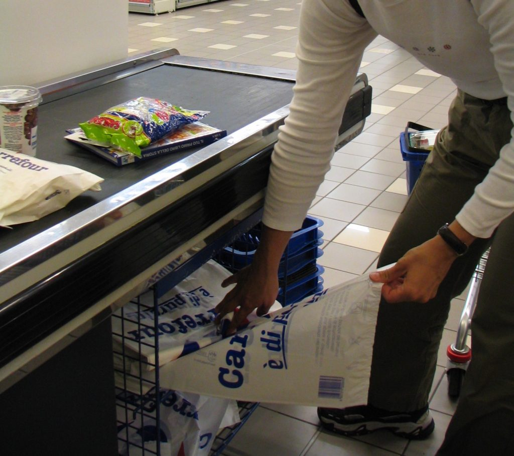

Supermarket plastic bags under the cash register counter
Once at the cash register (cassa), it is likely that nobody will ask you if you want paper or plastic bags, because plastic, more specifically biodegradable plastic, is usually the only option. The supermarket plastic bags are not free, they cost around €0.10 a piece. If you want to save some money (soldi) bring your own bags (borse), otherwise either the person at the cash register will ask if you need some (serve una borsa/busta?), or you will need to look for them under the cashier counter as shown above. {This is an excerpt from chapter 5 “Stores” of the eBook “Italy from the Inside. A native Italian reveals the secrets of traveling in Italy”. Buy our eBook on Amazon and leave us a review! If it’s good, you’ll make us happy, if it’s bad, you’ll make us improve. Thank you either way!}